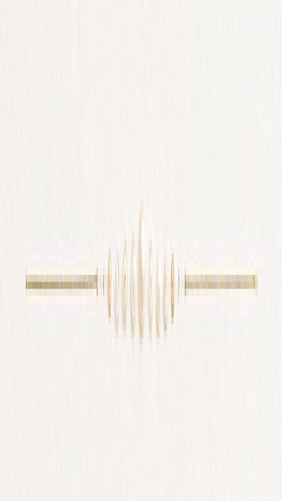
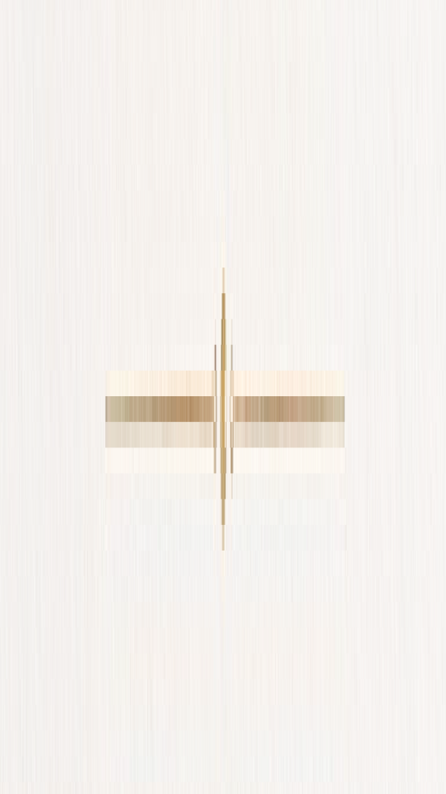

FOREVER
Wedding
With grateful hearts,
we invite you to share in the joy of two hearts brought together in love.

“I have found the one my heart loves.”
Song of Solomon 3:4

Ahin Thomas Johney
&
Suzanne Titus
27
SEPTEMBER
2026
AT 11:00 AM
ST. George’s Roman Catholic Church
Pallimukku, Kochi, Kerala
With love
Parents, Amala, Roseanne, Joanne,
Evanne & Richie